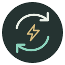

一份安装包，
换台电脑继续用。
AI 互审 · Relay 0.4.3 · Windows 10/11新电脑：解压 → 安装 → 加载扩展
- 从原私有 GitHub 仓库下载 AI-Relay-0.4.3-Windows.zip，右键“全部解压缩”。
- 双击 安装到本机.cmd，会优先使用 Edge。需要指定 Chrome 时，打开 AI互审启动助手.exe，选择 Chrome，再点“安装到本机 / 创建快捷方式”。
- 默认安装到
%LOCALAPPDATA%\Programs\AI-Relay，并创建桌面快捷方式。无需 D 盘、管理员权限、Node、Python 或 API Key。 - 在所选浏览器地址栏输入
edge://extensions/或chrome://extensions/，开启开发人员模式，点击加载解压缩的扩展，选择安装目录里的 extension 文件夹。 - 在这个浏览器中登录要使用的模型，双击桌面AI 互审即可开始。重新加载扩展不会自动弹出工作台。
此说明文件旁的扩展路径：
请在安装目录中选择 extension 文件夹请使用安装后打开的说明页。若你打开的是下载包里的说明，先安装，再从安装目录打开此文件。把旧电脑的数据带过来
旧工作台 → 设置与数据 → 导出 JSON。将文件传到新电脑后，在新工作台中导入 JSON，恢复问题、提示词、模型顺序、结果文字和框体尺寸。
登录状态需要在新电脑重新建立。正在运行的任务与标签页不会跨电脑继续，导入也不会自动发送。
尺寸与日常使用
- 拖动输入框与输出框之间的竖线调整左右宽度，双击恢复等宽。
- 拖动文字框右下角调整高度；展开“调整输入 / 输出框大小”可分别微调。尺寸会自动保存。
- 输入问题并选择 1-2-1、1-2-3-2-1 等顺序，点击“开始互审”。长文本转成 TXT 时会等待解析后发送。
- 卡住时可手动接管、手动发送后继续收取，或粘贴本轮完整回答进入下一轮。
- 完成后查看总用时和每轮用时细分，复制最终结果。应用只关闭自己创建的模型任务页。
已有安装：覆盖更新
安装到原目录后，在扩展管理页点重新加载，关闭旧工作台，再打开桌面快捷方式，确认页脚 0.4.3。自定义安装位置可在 Install.ps1 中用 -InstallDir 指定。原有 D:\APP\AI-Relay 可以继续使用。
保持同一浏览器配置及扩展 ID，即可保留本地数据。网页改版时仍可能需要更新适配；Kimi 桌面客户端暂不支持。
源码、构建脚本和图标原图保存在私有仓库。安装包只包含运行所需文件，不包含你的模型登录信息与聊天记录。